『すりぬけアナトウス』は、さまざまな形をしたカタマリを回転させて、壁にあいたアナをすりぬけ高得点を競うという、「疾走すりぬけパズル」です。
基本となるルールはとてもシンプルですが、3つのモードや専用のステージなども用意されていて、さまざまな遊び方ができるようになっています。また、ハイスコアをねらうためのテクニックや、やりこみ要素もたっぷりで、かなり奥が深いパズルゲームになっています。
それでは早速、どんなゲームなのか見てみましょう。
基本となるルールはとてもシンプルですが、3つのモードや専用のステージなども用意されていて、さまざまな遊び方ができるようになっています。また、ハイスコアをねらうためのテクニックや、やりこみ要素もたっぷりで、かなり奥が深いパズルゲームになっています。
それでは早速、どんなゲームなのか見てみましょう。
『すりぬけアナトウス』は、まずカタマリの操作方法をおぼえる「カタマリのオキテ」からはじまります。このモードは、実際にゲームをプレイしながら、出された課題をひとつずつクリアして進めるチュートリアル形式になっているので、楽しみながら操作を覚えることができます。
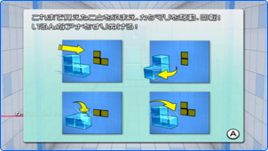
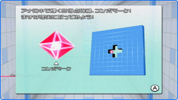
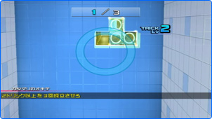
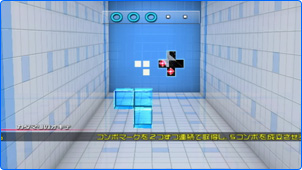
『すりぬけアナトウス』には、実にさまざまな形のカタマリが登場します。複雑な形をしたカタマリを、壁のアナの形にピッタリと合うようにうまく回転させることが、このゲームのキモとなる部分です。
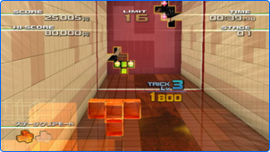
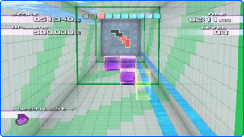
また、壁に向かって直進するカタマリは、バックさせることができません。したがって、壁に到達するまでの短い時間で、カタマリを正しい向きに回転させる必要があります。瞬間的な判断力がポイントです。
実際にプレイしてみると、最初のうちはなかなか思い通りにカタマリを動かすことができなかったり、迫ってくる壁にあわててミスをしてしまうかもしれません。しかし、「カタマリのオキテ」で順番にステップを踏んでちょっと練習すれば、どんどん壁をすりぬけられるようになります。
少し慣れてきたら、カタマリを加速させてみてください。スピード感がグッと増して、さらに気持よく遊ぶことができるはずです。このように、上達すればするほど、壁をすりぬけられた時の爽快感が病みつきになります。 まずは「カタマリのオキテ」で基本の操作をしっかりと身につけるところからはじめて、ステージクリアやハイスコアを目指してみてください！
実際にプレイしてみると、最初のうちはなかなか思い通りにカタマリを動かすことができなかったり、迫ってくる壁にあわててミスをしてしまうかもしれません。しかし、「カタマリのオキテ」で順番にステップを踏んでちょっと練習すれば、どんどん壁をすりぬけられるようになります。
少し慣れてきたら、カタマリを加速させてみてください。スピード感がグッと増して、さらに気持よく遊ぶことができるはずです。このように、上達すればするほど、壁をすりぬけられた時の爽快感が病みつきになります。 まずは「カタマリのオキテ」で基本の操作をしっかりと身につけるところからはじめて、ステージクリアやハイスコアを目指してみてください！
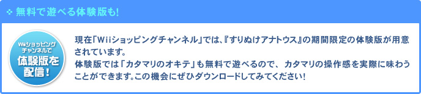
※体験版の配信は終了しました。（2010/10/5）
『すりぬけアナトウス』には、制限時間内に決められた数の壁のアナをすりぬける「ステージクリア」と、3回ミスをしない限りひたすらプレイできる「エンドレス」、そして「トリックチャレンジ」という3つのモードがあります。カタマリを加速して速度を競ったり、ハイスコアを目指してボーナス得点をねらうなど、さまざまな楽しみ方ができます。
気が向いたときに好きなモードを選んでプレイできるだけでなく、自分の得意なモードだけを徹底的にやりこんだり、友だちと特定のモードでタイムやスコアを競ったりもできるので、息長く楽しむことができるでしょう。
気が向いたときに好きなモードを選んでプレイできるだけでなく、自分の得意なモードだけを徹底的にやりこんだり、友だちと特定のモードでタイムやスコアを競ったりもできるので、息長く楽しむことができるでしょう。
とにかく急いで壁のアナをすりぬけて、制限時間内にゴールを目指すモードです。ステージをクリアすると、新しいステージやカタマリが次々に登場します。ステージに慣れてきたら、より高得点でクリアするスコアアタックのやりこみもできます。
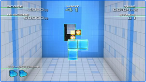
制限時間やゴールはなく、文字通りエンドレスで楽しめるモードです。どれだけミスをせずに先にすすめるか挑戦したり、トータルのハイスコアにチャレンジできます。どれだけ長時間集中力を保てるかを競うモードと言えるでしょう。
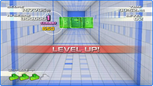
『すりぬけアナトウス』には、ボーナス得点がもらえる「コンボ」と「トリック」というテクニックがあります。このモードでは、すべての壁でトリックを決め、なおかつ壁をすりぬける必要があります。より短い時間で、どの回転をするべきか判断する力と、すばやい操作が必要なので、難易度は高く、挑戦しがいのあるモードです。
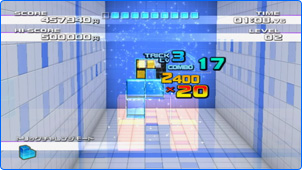
1人用ゲームですが、ハイスコアを達成するとインターネット経由でワールドランキングに登録することもできます。コンボやトリックを駆使して、世界のトップにチャレンジしましょう！
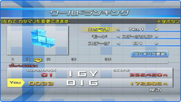
『すりぬけアナトウス』は、シンプルなルールで気軽に遊べるパズルゲームですが、プレイするほどに上達が実感できて、うまく壁をすりぬけられた時の爽快感はバツグンです。また、ボーナス得点をもらえるテクニックを身につければ、さらにやりこむことができ、遊びごたえもたっぷりです。
Wiiウェアとしてオンライン配信されていますので、インターネット環境さえあれば、すぐにダウンロードできます。きれいな3Dグラフィックも特徴的なこの『すりぬけアナトウス』、みなさんもぜひプレイしてみてください！
Wiiウェアとしてオンライン配信されていますので、インターネット環境さえあれば、すぐにダウンロードできます。きれいな3Dグラフィックも特徴的なこの『すりぬけアナトウス』、みなさんもぜひプレイしてみてください！